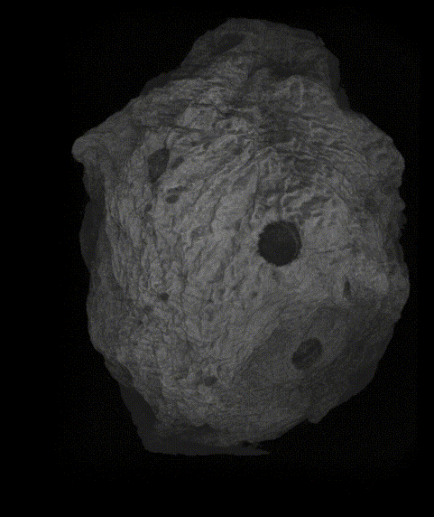
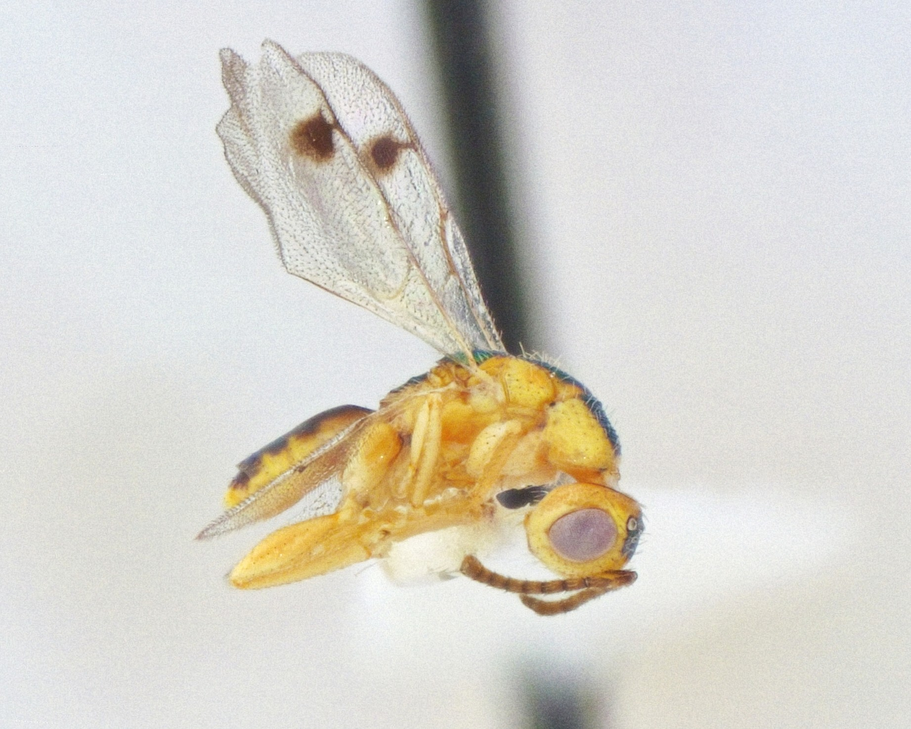

PhD Candidate in Integrated Biology at the University of Iowa
Entomology · Evolutionary Ecology · Speciation
About
I am a fourth-year PhD candidate at the University of Iowa studying integrated biology. My central focus is the diversity of parasitic insects and how host associations and host shifting can explain the history of speciation and biodiversity. My work sits at an intersection of evolutionary ecology, phylogenetics, and systematics.
While parasitic wasps, and their hosts, are my core interest at the moment, I have experience with other insects. Some of my previous work has involved cicadas, predatory beetles, and grain pests. Additionally, my experience with these insects has, historically, come from a lens of conservation and biocontrol.
Outside of research, I have a few different hobbies. Recently, I've started practicing, and competing, in saber fencing. I also spend a lot of time baking and experimenting in the kitchen, collecting and listening to vinyls, & reading science fiction or historical nonfiction.
Teaching Philosophy
I aim to guide students to think logically and empathetically about the world around them and encourage them to apply what they learn with respect to nature and others.
I believe a good teacher chooses compassion over challenge and values effort over output.
I am committed to creating environments where students engage with foundational biological principles through real-life examples, practical experiences, and honest conversations about ethics in science.
My approach to teaching draws on the ideas of social constructivism. I believe that students learn best when they build understanding collaboratively using meaningful examples and activities with a teacher who scaffolds rather than lectures.
I am interested in how host-associated insects accumulate into the staggering diversity we see today. Phytophagy and parasitism together account for roughly 40% of described animal diversity on Earth. One compelling explanation for this diversity is divergent ecological speciation. As insect species shift to new host species, trade-offs between ancestral and derived environments drive divergent selection on behavioral, phenological, and morphological traits. These may erect reproductive isolating barriers that could result in the origin of new species.
While these mechanisms are well-documented in isolated host-parasite pairs, it remains unclear how variation among parasites affects the likelihood and specific drivers of speciation. I address this by studying many parasites interacting with many hosts simultaneously, asking whether different parasites diversify along the same ecological axes. In other words, whether the "rules" of speciation are general among parasitic wasps.
My focal system is oak gall wasps (Hymenoptera: Cynipini), whose galls attract a rich community of invaders. These parasites exhibit three different forms of parasitism: 1) kleptoparasites that consume gall tissue, 2) parasitoids that attack and result in the death of the gall wasp larva, and 3) hyperparasitoids that attack and kill the parasitoids. I am interested in how these different feeding ecologies interacts with the physical dimensions of galls to shape divergence across the community.

Micro-CT "fly-through" of an oak gall revealing internal larval chambers — the perfect environment for development, and for invaders.
Publications
Periodical cicadas suffer legacy effects of century-old forest removal
University of Iowa · Prof. Andrew Forbes. Two sections, Fall 2023.
2024, 2026
Teaching Assistant — Evolution
University of Iowa · Prof. John Logsdon. Lead weekly workshops for approx. 20 undergraduates; facilitated active-learning exercises in phylogenetics, population genetics, and natural selection; guest lecturer for coevolution.
Ongoing
Instructional Design
Graduate coursework in evidence-based instructional design, learning objective development, and iterative assessment design.
2023–Present
Undergraduate Research Mentor
Department of Biology, University of Iowa. Mentoring undergraduates in research design, specimen collection, and data analysis.
Outreach
Summer 2024
Community Outreach — Iowa City, IA
Parks and Recreation Department. Taught members of the Iowa City community how to identify, collect, and preserve insects.
I am also involved in public outreach around native biodiversity and oak gall ecology through the Cynipini Larval Sequencing Project on iNaturalist.
Instructional Design Project
Context
Revising Instruction for Evolutionary Tree Inference
As part of my graduate coursework, I revised the instructional design for teaching maximum parsimony in an evolution course at the University of Iowa. Students in evolution courses are expected to construct and interpret phylogenetic trees using DNA sequences, which is a cognitively demanding task complicated by persistent misconceptions and visual confusion. For this project, I identified the root causes of student difficulty and developed in-class activities, accompanying lecture material, instructor guides, and a restructured homework assignment to progressively scaffold student skill-building for maximum parsimony phylogenetic inference.
Analysis/Setting
Course and Learner Context
The learners for this project were 49 undergraduate students across three workshop sections. Of the learners, 21.6% were third-year students and 78.4% were fourth-year students. 56.9% were pursuing a B.A. and 43.1% were pursuing a B.S. Additionally, most students had aspirations directly related to medicine or human biology. Together, these demographics suggest low intrinsic motivation for evolutionary biology, implying that effective instruction needed to make the topic personally relevant to foster engagement, rather than redesigning the content alone.
Design/Product
Systematic Design
The scaffolded workshop sequence used a productive failure framework while incorporating experiential learning and cognitive load theory. This was accompanied by a restructured homework assignment designed to function as an independent but connected learning event. Together, the workshop and homework were designed to gradually transition students toward completing complex, interconnected phylogenetic problems on their own.
Results
Findings and Takeaways
The workshop redesign was associated with improved student preparedness, understanding of learning objectives, and assignment clarity. Survey and interview data indicate that students felt comfortable attempting independent problems on the homework after receiving instruction. Importantly, the redesign maintained an appropriate level of challenge. Students described the assignment as a "fun and engaging challenge" that felt like a "natural escalation."
Blog
News and Updates

July 30, 2025
New Paper in Journal of Hymenoptera Research
We published on two non-native Bootanomyia parasitoid wasps introduced to North America — tracing their origins and asking whether non-native parasitoids matter ecologically.